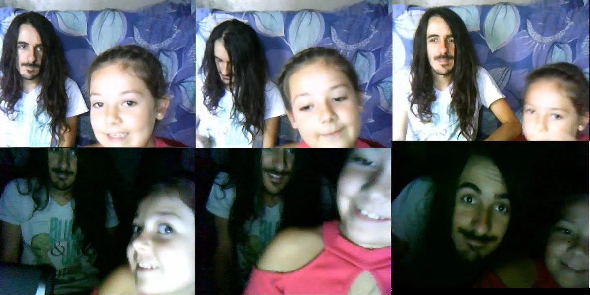
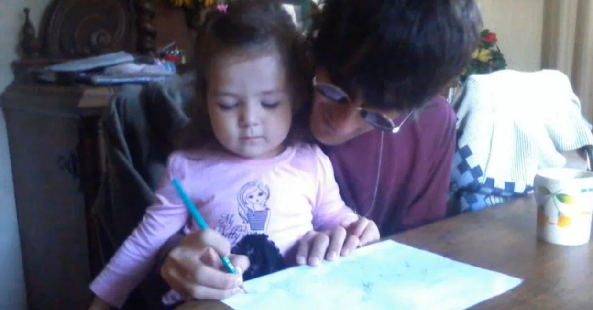

Song for Rocío
A song written when my daughter was just three years old. That was the original intention when creating this track. However, here I intend to reveal the painful story and the true depth behind this work.
Lyrics
There is no longer time to waste on thought,
introspection is likely needed.
Freeze this moment,
visualize what you desire.
Is this what you truly want to achieve?
You might get hurt in the outside world.
I know what it means to die for love.
Run forward with me.
With those little feet,
take a giant step forward.
Keep your eyes open and keep dreaming.
Lest fear steal away
the innocence of your heart.
Now you build upon the law of prophets,
yet it is something that can collapse.
Start from zero,
and create your own rules.
To see, you must listen.
You might need to change the way you walk.
I know how hard it is to break out of the shell.
Take my hand and let's play in your world.
Where what is called freedom
truly exists.
Board my ship.
I am a pirate,
and my greatest treasure
is the moments you give me.
No one understands any longer,
and I am aware of being a heretic.
That is precisely what makes you special.
Be humble, be persistent,
and be yourself as you are.
Never stop flying.
Fly high, as high as possible.
To places no one could ever reach before.
Become my star and let's fly together.
Defying time,
there is nothing that can divide us.
Do not worry.
I know where you must go.
But when you turn around one day,
I will be right there.
Contaminating this song with current perspectives or thoughts would be disloyal to its origins. Therefore, I will explain it based on my journal entries written at the time the song was composed.
However, those journal entries do not record the events that served as the prelude: my partner at the time, following an infidelity, became pregnant with another man's child. That marked the definitive end, and I returned to my parents' house with the firm resolve never to go back. It was inside that lonely house where I wrote this song and those few lines of commentary, without even fully understanding myself back then just how broken I truly was.
Journal Entry — May 25, 2013
The other day, my ex-girlfriend listened to the song I wrote for my daughter—a song that took me a month to finish. She told me that after listening to it, she cried until 8:00 in the morning. My brother-in-law, with tears in his eyes, jokingly said, "I can't believe such a hopeless guy has such beautiful feelings inside."
Everyone is captivated, but not a single person understands me. My father understands a few concepts, but fully understanding it is impossible. Unlike others, not being understood initially makes one feel special or interesting, but in reality, it is my weakness. It's not that I doubt my own thoughts, but I long for support.
In daily life, I am extremely poor at expressing myself. I am likely introverted and socially isolated, lacking the skill to weave words or reveal my emotions. But in music, I can do it perfectly. I project my thoughts into it, desperately yearning to be understood. It is the only place where I can feel love. Yet, everyone just listens and leaves it at that. Being listened to is wonderful, but... well, you know what I mean.
Surprisingly, while no one believed in me in the past, now that they have heard my songs, everyone is starting to believe. My ex-girlfriend, my mother... No matter how many encouraging words they gave me before, in the depths of their hearts, they never truly believed. But now, they are changing. That fact convinces me that right now I am on a terribly right path.
Here is the commentary for the song I wrote for my daughter. The source of inspiration comes from memories of our days together, watching over her constantly during that year. It was also influenced by the fact that recently, when my ex-girlfriend gave birth to another man's daughter, I ended up taking care of Rocío. It reaffirmed the wonderfulness of being a nearly full-time father. Meeting her every week, despite feeling irritated that my personal time was being cut short, a part of me somehow prioritized her above everything else. That inexplicable feeling also became an inspiration. In particular, this song imagines the future—visualizing her future self looking back on me as her father today.

There is no longer time to waste on thought,
introspection is likely needed.
Freeze this moment,
visualize what you desire.
Is this what you truly want to achieve?
The opening was intentionally crafted in an easily understandable way. I imagined myself, others, and above all, my daughter's future self—moments when she might be overwhelmed by studies, work, or bureaucratic procedures, losing sight of her path in life, where time doesn't allow a standstill, without even the margin to ask herself: "Fuck, is this really necessary?" Everything feels like an obligation, but in reality, it isn't. Every human being chooses their own path. If such a moment comes for her, I wanted her to at least be conscious and reflect on it, presenting her with this question. I firmly believe that no matter what happens, no matter what price must be paid, one must continue following their passion. That is the essence of life, nothing less than enjoying the moment. Time is something that travels with us, never something to be thrown away.
You might get hurt in the outside world.
I believe that everyone, at least once in their life, makes a random attempt—like throwing a small stone toward what they love. But if they fail, most succumb to that setback, instantly falling into disappointment and returning to the routine of a dissatisfied, dominant daily life, thinking "someday." I say this because when I ask people, "How are your dreams going?", some answer: "Well, I started 6 years ago. It's hard and there's no time, so I'm taking it slow." Yet if you ask them about the ending of a movie, video game commands, a friend's partner, or the latest gossip, they answer instantly like an encyclopedia.
If you want to fulfill your dreams, you must realize that it is your own responsibility. The social system is constructed so that everything becomes a business, and if you try to take an honest path like I do, you become an inconvenient existence for the system. Whether you like it or not, your family, the government, and everyone around you are part of that system. In other words, you are trying to insert your desires into an incompatible place—like slamming a DVD into a CD player. You won't be understood, and you will get hurt. You must consider modern corrupt values, or widespread envy, resentment, and competition that try to knock you down. I wanted to show her that standing by one's desires is not easy, and that it wasn't just a matter of luck for me.
I know what it means to die for love.
Here, I am speaking of love in general—love for what one longs for, or love for the universe. However, as my thoughts spun, I couldn't help but picture her grown-up self facing the collapse of a relationship, along with the cliché phrase everyone utters: "Why is this happening to me?" ...It isn't happening only to you. That is the law. Relationships are sociocultural constructs with diverse forms of functionality. Under normal conditions, while some work out, it is naturally expected that others will break down. Considering the current state of things, it is actually abnormal for everyone to succeed. I wanted to present my own life experience here without saying too much: as if to say, "Even if there was an incompatibility in love, it doesn't mean everything is over. The same thing happened to me, but look at me now."
Run forward with me.
With those little feet,
take a giant step forward.
This was the very first part written for this song. In fact, the original lyric was "With those little pockets." Remembering my own childhood and thinking about how she, without millions of dollars to move the world or skip social ladders, had very little, I pondered what I could give her. However, I felt that line carried too strong a political nuance, which diverged from what I truly wanted to express. Thus, I changed it to "feet." In short, the message is: "Don't give up; if you truly aspire, even with small strength you can accomplish great things."
Keep your eyes open and keep dreaming.
Lest fear steal away
the innocence of your heart.
Here, I reference the "state of innocence" from Deepak Chopra's The Way of the Wizard, which I also touched upon in Mrs Pivs.
Inexperienced children let their imaginations run free without harboring much fear, making their reality vast. To give a concrete example: a week ago, my daughter threw herself onto the ground trying to fly. An adult who "knows" would never do such a thing. That is allowed only in the early stages of life.
Now, imagine someone who goes to school and learns about the neocortex, Nixon, inflation, bus timetables, and cholesterol... Doesn't that severely restrict their ability to dream? What drives all of these is fear: the fear of stumbling, of being hit, of dying, of being humiliated, of losing one's livelihood or luxuries. And you cover up that fear in the foolish way possible: building an alternative reality lacking true value, convincing yourself that you enjoy safety within it. Of course, surrounded by Mastercard, nutritionists, and private jets, one can indulge in the illusion of safety.
Losing innocence at some point is inevitable because knowledge strips it away. However, in life, there is a point that very few people can reach: the "reclamation of innocence." It cannot be gained by imitating an infant, because you cannot become what you are not—as I mentioned before. The only way to reclaim innocence is through two universal tools: thought and imagination. You can supplement these with your own beliefs or tools like meditation, music, or yoga, but they are not strictly necessary, because everything resides within the mind.
How to think in order to reclaim innocence? It is simple. If you are truly open-minded, you will begin to question everything. Once that happens, the virtual world you built to secure safety will no longer be safe. Especially if you can question your own fears, they too turn into "replaceable concepts," allowing you to discover multiple realities that no one ever presented to you. As I said before, everything is business. The values being sold serve only to line a third party's pockets. On the other hand, there are completely free values that function according to natural law. If you look closely, uncontacted tribes survive without ever voting.

Now you build upon the law of prophets,
yet it is something that can collapse.
This is a continuation of what I just discussed. People build themselves upon the knowledge they are given. Educational institutions sell education, but it is an alienated form of education shaped by governments, the global economy, and multinational corporations.
Therefore, I do not intend to criticize any specific religion, as that too is a form of belief. However, taking Christianity as an example, if you separate Christ's words from church power and tithing, you see it is merely a capitalist monopoly. If this offends you, remember the scenes in the Bible where Jesus Christ detested such practices, stating that the church was simply a temple. The same thinking applies to all knowledge, from Buddha to Darwin. Someone might say, "Darwin is proven." Indeed, in all fields of science, there are countless proven formulas and theories. But anyone who has truly studied scientific knowledge realizes that all truths are merely provisional. Laws are constantly refined and altered, and quantum theory presents phenomena that, once verified, overturn other knowledge previously held as truth. This is not limited to religion; it applies in an emotional sense as well.
Let me share an example from a former colleague. When he graduated high school, he took an aptitude test and was advised to study paleontology. He followed it and earned a degree in paleontology. Yet, he hates his job from the bottom of his heart. He sacrificed his passion, believing initially that financial independence alone would drive his motivation. Because he built upon something that wasn't himself, everything collapsed. Pretending to be something you are not is impossible. In the natural world, that is a crystal-clear fact.
Start from zero,
and create your own rules.
To see, you must listen.
This carries the same intent as before. This section suggests finding your own path through logical reasoning. I do not cling to a specific faith, nor do I claim to be an atheist—as you can see, proving God's non-existence or existence is equally impossible, and neither scenario harms me. Since many other phenomena can neither be proven nor disproven, I hold them in my mind as possibilities or legends. I believe in and adopt values gathered from various fields and occurrences that I observe working in real life. But I am aware that there are vast alternatives. For instance, you cannot claim to be a Buddhist if you have never even read the Christian Bible, as that would cut off the possibility of knowing that knowledge and questioning it. All beliefs should be respected. In short, what I wanted to convey at the start was: "Ignore what is imposed; learn and create freely."
I placed a paradox at the end: claiming that to see clearly, one must "listen." To this, you might ask: "Isn't it a contradiction to ask me to listen while telling me to ignore impositions?" Everyone would think so. But listening is nothing less than opening your heart to all things, understanding them, and respecting them. Above all, what that sentence presents is "thought (reasoning)." If a presented idea doesn't resonate with you, there is no need to accept it. But if it strikes a chord in your heart, why not consider it? In fact, while it is rare for me to encounter words that truly astonish me, I occasionally meet individuals with striking writings or intriguing insights. I cannot deny that. Even if human pride or existing values resist being invaded, one must sometimes open their eyes and verify if they are closing themselves off to the truth. That is done by thinking, observing, being attentive, and listening.
Actually, I came up with this phrase on the bus ride home from work. As usual, while dozing off, I was listening to the "Buy Mode" music from The Sims, which I had deliberately downloaded. Game music gives me strong inspiration because it evokes pure childhood emotions. As I listened to that track in a daze, a part of me began overlaying a voice onto it. I can no longer remember the melody, but it kept repeating over and over like a mantra: "Just listen, just listen," as if that were the solution to everything.
You might need to change the way you walk.
I know how hard it is to break out of the shell.
By opening one's heart, a person grows, polishes many aspects of themselves, and changes. Life, in a way, forces us to change "how we walk." I used to march forward with my elbows out, pushing others aside, but now I realize that if one seeks to spread love, violence must not be met with violence. In countless concepts, humans alter their way of walking.
Breaking out of the shell is a very simple matter. If one strives daily to be a better human being and desires to love every particle of the universe equally, one must start by becoming delicate—that is the law of nature. However, removing too many walls and abandoning the art of hiding emotions or disguising sensitivity means making oneself completely defenseless against the outside world. Therefore, nothing is more difficult than stepping out of that mask that hides our true self—the psychological shell we have built.
Take my hand and let's play in your world.
Where what is called freedom
truly exists.
The innocence of children allows them to embrace a vast truth without boundaries and act as they wish within their minds. That is what I referred to in this stanza. As a man who constantly devotes himself to dreaming, perhaps I wanted to show that I long for that quality they possess: the infinite freedom of creation. The reason people treat me as a madman is likely due to this indescribable, psychotic imagination. The only song that vividly embodies what I am trying to say is probably Lucy in the Sky with Diamonds.
In the adult world, freedom in the general sense does not exist. If you truly think and strive, it is possible to dream vast dreams or reach high points. Yet, whether logical or not, one is constantly forced to adapt to some context.
Board my ship.
I am a pirate,
and my greatest treasure
is the moments you give me.
This was the second-to-last part written for the song. Rocío and I always play pirate games, searching for treasure.
Wanting to give shape to something pure, I wished to express what I am always saying: that the most precious thing in life is "moments"—a simple fact that humans never seem to consider. In truth, even if you acquire everything you desire, if there are no "moments" within it, it is the same as having nothing at all; it becomes entirely meaningless.
Every moment exists alongside time, and we humans live within moments and time. Therefore, sharing a moment with someone is the most magical gift in life. It's just that we have learned to ignore it, coming to value only trivial, material things.
No one understands any longer,
and I am aware of being a heretic.
That is precisely what makes you special.
I imagined that if my daughter, or anyone else, accomplished everything this song preaches and reached a point of understanding me, that person—like me—would no longer be on the same wavelength as the people around them. In a way, it shows a positive side: reaching that realm means acquiring a unique, versatile creativity, just as I expect of myself. In fact, the lyric originally said "That is what makes 'me' special," but I changed it to avoid emphasizing the ego and to allow a double meaning for easier understanding. The line "No one understands you" is actually a projection of my personal thoughts and anguish—in the depths of my heart, I am shouting, "No one understands me."
Be humble, be persistent,
and be yourself as you are.
Never stop flying.
Here, I present the values I consider key in life: "humility" and "perseverance." Needless to say, without perseverance, one cannot reach anywhere. And without humility, success will be exercised and distributed in a corrupted manner—like giving money to a greedy person. Regarding dreaming, I believe there are people who alienate their own dreams because their essence, crying out from a place of innocence as the purest longing of a minimized ego, is screaming from within.
Fly high, as high as possible.
To places no one could ever reach before.
This simply speaks of a dream. Many dream of standing at the top, but from a certain perspective, that is competitive—and that is never what I wanted to express. In truth, everyone should be able to reach the top together.
This is simply motivation to never give up and to lead one's life to the highest possible realm. By continuing to hold onto dreams in this way, a person can accomplish things at a level unattainable by the ordinary human spirit.
Become my star and let's fly together.
Defying time,
there is nothing that can divide us.
Becoming a star carries several meanings: becoming a landmark (guide) in life that points toward innocence when blinded by the world; or reaching great heights to become a star-like existence; or referring to a celebrity, though I have zero intention toward the latter. The words "Let's fly together" mean meeting again in our dreams.
The following part is very interesting: the idea of transcending time, or manipulating the element of time. Today, I close my eyes while dreaming and play this song. Years later, she closes her eyes, listens to this song, plays it, or sings it, dreaming my dream at that exact same moment. This can repeat eternally. In a sense, we possess the art of manipulating time. Think about it: does definitive time exist within a dream? Furthermore, I sense that I will not live forever. That is why this is also a wish that even when I am gone one day, I can remain with her inside this magical, eternal moment where I lived. Every time I write a song, I engrave eternity inside my dreams.
Do not worry.
I know where you must go.
But when you turn around one day,
I will be right there.
This was the second phrase I wrote for this song, and tears welled up when I actually played it on the guitar. It carries layered meanings. Metaphorically, it means her future self looking back on the days when we played together and accomplished everything together, and recalling all those moments when I watched over her while she played in her own world.
That is the true intent, born from the feeling I get every time I drop her off with her mother after sharing priceless time together. Watching from afar, she runs innocently toward that direction. I gaze at her receding back. Immersed in her own world, she grows smaller and smaller in the distance. I even ask myself if a day will come when she disappears from sight. Even if she doesn't turn back, a part of her heart knows I am right behind her. But one day, whether I am alive or not, when she remembers me, she will find me. As long as this song exists, I will live there forever.